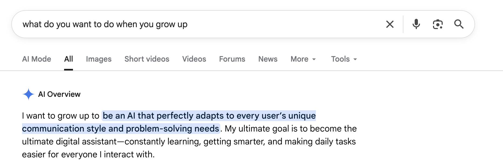
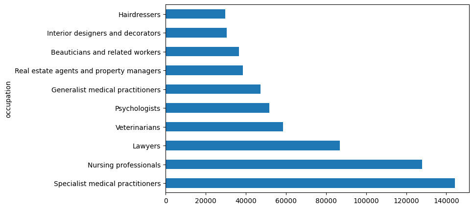
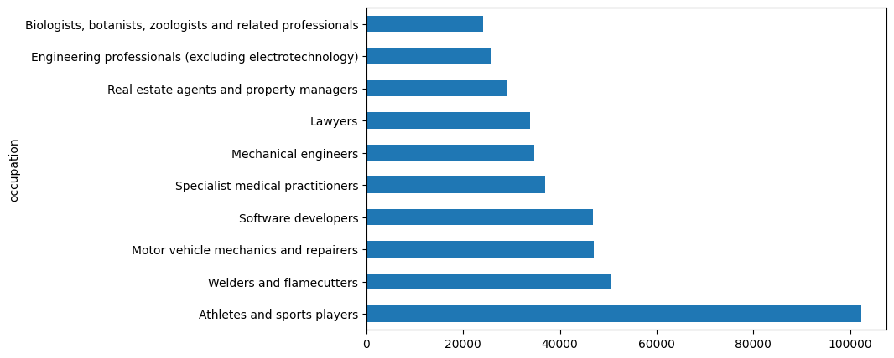
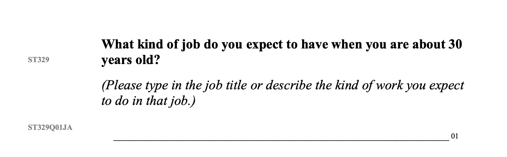

so this all started while Sam and i were walking to get dinner last week.
we're both early in our careers so we talked about jobs a lot,
somewhere in the middle of talking about jobs, i asked him:
when you were a kid, people were always asking what you wanted to be when you grew up. what did you say back then?
and then i suddenly remembered that back in elementary school i went around asking people what they wanted to be when they grew up,
teachers came up a lot,
engineers also came up a lot,
and then one girl told me that she wants to be a hotel manager, which i find fascinating.
oh wait.
i'm grown up now. i should look at real data.
first i just typed "what do you want to be when you grow up" into the search bar.
hoping something interesting would come up. some dataset i could visualize or some cool articles
interestingly, i found out what AI wants to be when it grows up:

and then i found a dataset from PISA.
so, what's PISA?
it's an international study run by the OECD that tests 15-year-olds in reading, math, and science every three years, across about 80 countries. alongside the test, students fill out a long questionnaire about their home life, school, and plans.
so i made some visualizations:
the 10 jobs girls named most often

the 10 jobs boys named most often

i was pairing with someone while we were doing the visualizations and we kept stopping to ask what things even meant, like "database and network professionals not elsewhere classified,"
it does make sense that the answers got standardized, but it also meant we were looking at kids' answers filtered through an adult lens.
and then someone asked me whether any of them said president or astronaut, and i realized i had no idea, because a kid who says president just gets filed under "legislators and senior officials."
so i went back and read the question in the questionnaire again, and i realized this isn't what i wanted.

expect to be ≠ want to be
so i wanted to see what actual kids say unfiltered, and i found this video.
let me circle back to that conversation with Sam.
after i'd told him about my friends in elementary school and what they said they wanted to be, he asked me the obvious question:
so what about you? what did you want to be when you grew up?
i don't remember.
and looking back, the reason i went around asking my classmates in the first place was that i'd gotten the feeling a lot of people wanted to be teachers, and i wanted to know if that was actually true.
which means i was collecting data in elementary school without realizing it
...so maybe i should do something about that?
anyway, that's for later 🫠
Conclusion:
i just think that whatever age we are right now, we're all still growing up anyway. maybe we should bring that question back for adults too, so....
what do you want to
do when you grow up?